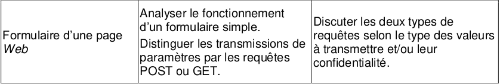
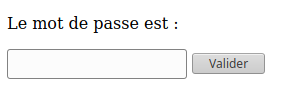
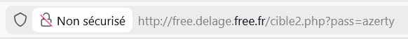
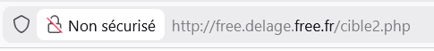
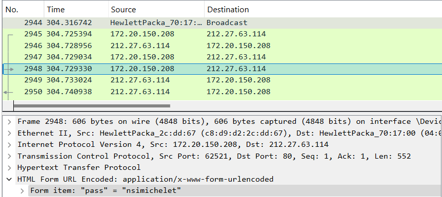
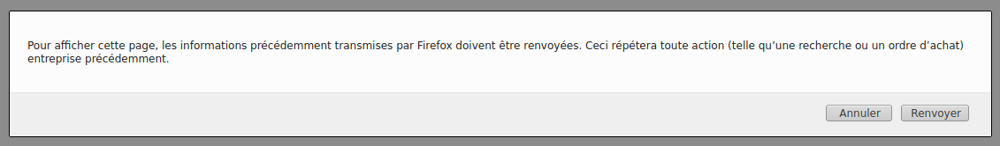
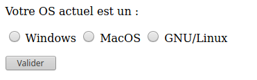
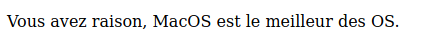

6.3 Requêtes GET, POST et formulaires⚓︎

1. Côté client : comment envoyer des paramètres à un serveur ?⚓︎
1.1. La méthode GET⚓︎
Considérons le formulaire suivant, inclus dans une page html ouverte dans le navigateur du client :
Le mot de passe est :
<form action="cible2.php" method="get">
<p>
<input type="password" name="pass" />
<input type="submit" value="Valider" />
</p>
</form>
Aperçu :

Explications :
- le fichier
cible2.phpest le fichier sur le serveur qui recevra les paramètres contenus dans le formulaire. - le paramètre sera nommé
passet sera de typepassword, ce qui signifie qu'on n'affichera pas les caractères tapés par l'utilisateur. On aurait pu aussi avoir un type :text: le texte s'affiche en clair (pour les login par ex)radio: pour une sélection (d'un seul élément)checkbox: pour une sélection (éventuellement multiple)
- un bouton comportant le label «Valider» déclenchera l'envoi (grâce au type particulier
submit) des paramètres (ici un seul, la variablepass) au serveur.
Test :⚓︎
- Rendez-vous sur la page http://free.delage.free.fr/ex_get.html et testez un mot de passe.
- Observez attentivement l'url de la page sur laquelle vous êtes arrivés. Que remarquez-vous ?
La méthode GET et la confidentialité :⚓︎
Les paramètres passés au serveur par la méthode GET sont transmis dans l'url de la requête. Ils sont donc lisibles en clair par n'importe qui.

Évidemment, c'est une méthode catastrophique pour la transmission des mots de passe. Par contre, c'est une méthode efficace pour accéder directement à une page particulière : ainsi l'url https://www.google.fr/search?q=arpajon nous amènera directement au résultat de la recherche Google sur le mot-clé «arpajon».
1.2. La méthode POST⚓︎
Dans notre code de formulaire du 1.1, modifions l'attribut method, auparavant égal à "get". Passons-le égal à "post" :
Le mot de passe est :
<form action="cible2.php" method="post">
<p>
<input type="password" name="pass" />
<input type="submit" value="Valider" />
</p>
</form>
Test :⚓︎
- Rendez-vous sur la page http://free.delage.free.fr/ex_post.html et testez un mot de passe.
- Observez attentivement l'url de la page sur laquelle vous êtes arrivés. Que remarquez-vous ?
La méthode POST et la confidentialité :⚓︎
Les paramètres passés au serveur par la méthode POST ne sont pas visibles dans l'url de la requête. Ils sont contenus dans le corps de la requête, mais non affichés sur le navigateur.

Donc, la transmission du mot de passe est bien sécurisée par la méthode POST ?
 Pas du tout ! Si le protocole de transmission est du
Pas du tout ! Si le protocole de transmission est du http et non pas du https, n'importe qui interceptant le trafic peut lire le contenu de la requête et y trouver le mot de passe en clair.
Exemple avec Wireshark :

Le contenu de la variable "pass" est donc visible dans le contenu de la requête.
Le passage en https chiffre le contenu de la requête et empêche donc la simple lecture du mot de passe.
Résumé : quand utiliser GET ou POST ?⚓︎
- GET : la méthode GET doit être utilisée quand les paramètres à envoyer :
- n'ont pas de caractère confidentiel.
- n'ont pas vocation à créer des modifications sur le serveur (ceci est plus une bonne pratique qu'une interdiction technique)
- ne sont pas trop longs. En effet, vu qu'ils seront contenus dans l'url, il peut exister des limites de longueur spécifiques au navigateur. Une taille inférieure à 2000 caractère est conseillée.
Si vous vous demandez à quoi peuvent servir des url si longues, songez à ce type d'url, (ici PythonTutor) où le code du programme à analyser est contenu dans l'url :
http://pythontutor.com/visualize.html#code=L%20%3D%20%5B2,%203,%206,%207,%2011,%2014,%2018,%2019,%2024%5D%0A%0Adef%20trouve_dicho%28L,%20n%29%20%3A%0A%20%20%20%20indice_debut%20%3D%200%0A%20%20%20%20indice_fin%20%3D%20len%28L%29%20-%201%0A%20%20%20%20while%20indice_debut%20%3C%3D%20indice_fin%20%3A%0A%20%20%20%20%20%20%20%20indice_centre%20%3D%20%28indice_debut%20%2B%20indice_fin%29%20//%202%0A%20%20%20%20%20%20%20%20valeur_centrale%20%3D%20L%5Bindice_centre%5D%0A%20%20%20%20%20%20%20%20if%20valeur_centrale%20%3D%3D%20n%20%3A%0A%20%20%20%20%20%20%20%20%20%20%20%20return%20indice_centre%0A%20%20%20%20%20%20%20%20if%20valeur_centrale%20%3C%20n%20%3A%0A%20%20%20%20%20%20%20%20%20%20%20%20indice_debut%20%3D%20indice_centre%20%2B%201%0A%20%20%20%20%20%20%20%20else%20%3A%0A%20%20%20%20%20%20%20%20%20%20%20%20indice_fin%20%3D%20indice_centre%20-%201%0A%20%20%20%20return%20None%0A%0Aprint%28trouve_dicho%28L,14%29%29&cumulative=false&curInstr=0&heapPrimitives=nevernest&mode=display&origin=opt-frontend.js&py=3&rawInputLstJSON=%5B%5D&textReferences=false
-
POST : la méthode POST doit être utilisée quand les paramètres à envoyer :
- ont un caractère confidentiel (attention, à coupler impérativement avec un protocole de chiffrement).
- peuvent avoir une longueur très importante (le paramètre étant dans le corps de la requête et non plus dans l'url, sa longueur peut être arbitraire).
- ont vocation à provoquer des changements sur le serveur. Ainsi, un ordre d'achat sur un site de commerce sera nécessairement passé par une méthode POST. Les navigateurs préviennent alors le risque de «double commande» lors d'une actualisation malencontreuse de la page par l'utilisateur par la fenêtre :

Cette fenêtre est caractéristique de l'utilisation d'une méthode POST.
2. Côté serveur : comment récupérer les paramètres envoyés ?⚓︎
Du côté du serveur, le langage utilisé (PHP, Java...) doit récupérer les paramètres envoyés pour modifier les élements d'une nouvelle page, mettre à jour une base de données, etc. Comment sont récupérées ces valeurs ?
Exemple en PHP⚓︎
L'acronyme PHP signifie **P**HP : **H**ypertext **P**rocessor (c'est un acronyme récursif).
Notre exemple va contenir deux fichiers :
- une page
page1.html, qui contiendra un formulaire et qui renverra, par la méthode GET, un paramètre à la pagepage2.php. - une page
page2.php, qui génèrera un codehtmlpersonnalisé en fonction du paramètre reçu.
page1.html⚓︎
<!DOCTYPE html>
<html>
<head>
<meta charset="utf-8">
<title>exemple</title>
</head>
<body>
Votre OS actuel est un :
<form action=page2.php method="get">
<p>
<input type="radio" name="OS" value="Windows"> Windows </input>
<input type="radio" name="OS" value="MacOS"> MacOS </input>
<input type="radio" name="OS" value="GNU/Linux"> GNU/Linux </input>
</p>
<p>
<input type="submit" value="Valider" />
</p>
</form>
</body>
</html>
page2.php⚓︎
<!DOCTYPE html>
<html>
<head>
<meta charset="utf-8" />
<title>Le meilleur OS</title>
</head>
<body>
<p>
<?php
if (isset($_GET['OS']))
{
Print("Vous avez raison, ");
echo $_GET['OS'];
Print(" est le meilleur des OS.");
}
?>
</p>
</body>
</html>
Détail du fonctionnement :⚓︎
- À l'arrivée sur la page
page1.html, un formulaire de type boutons radio lui propose :
- Lorsque l'utilisateur clique sur «Valider», la variable nommée
OSva recevoir la valeur choisie et va être transmise par une requête GET à l'url donnée par la variableactiondéfinie en début de formulaire. Ici, le navigateur va donc demander à accéder à la pagepage2.php?OS=MacOS(par exemple) - Le serveur PHP qui héberge la page
page2.phpva recevoir la demande d'accès à la page ainsi que la valeur de la variableOS. Dans le code PHP, on reconnait :- le booléen
isset($_GET['OS'])qui vérifie si le paramètreOSa bien reçu une valeur. - l'expression
$_GET['OS']qui récupère cette valeur. Si la valeur avait été transmise par méthode POST (pour un mot de passe, par exemple), la variable aurait été récupérée par$_POST['OS']. Elle n'aurait par contre pas été affichée dans l'url de la page.
- le booléen
- La page
page2.php?OS=MacOSs'affiche sur le navigateur de l'utilisateur :

Remarque⚓︎
L'exemple ci-dessus est un mauvais exemple : rien ne justifie l'emploi d'un serveur distant. L'affichage de ce message aurait très bien pu se faire en local sur le navigateur du client, en Javascript par exemple.
L'envoi de paramètre à un serveur distant est nécessaire pour aller interroger une base de données, par exemple (lorsque vous remplissez un formulaire sur le site de la SNCF, les bases de données des horaires de trains, des places disponibles et de leurs tarifs ne sont pas hébergées sur votre ordinateur en local...).
La vérification d'un mot de passe doit aussi se faire sur un serveur distant.
TP - Attaque par dictionnaire⚓︎
Audit de sécurité d’un système d’authentification⚓︎
Objectifs⚓︎
Dans cette activité, vous allez :
- comprendre comment un formulaire web transmet des données ;
- utiliser Python pour interagir avec une page web ;
- réaliser une attaque par dictionnaire ;
- analyser les faiblesses d’un système d’authentification ;
- proposer des solutions pour améliorer sa sécurité.
Cadre légal et éthique
Cette activité est réalisée uniquement dans un cadre pédagogique, sur une page volontairement vulnérable mise à disposition pour l’exercice.
Toute tentative similaire sur un site réel sans autorisation explicite constitue une pratique
Contexte⚓︎
Vous êtes chargé d’auditer un prototype de page de connexion développé pour une petite entreprise.
Le développeur affirme que son système est sécurisé.
Votre mission est de vérifier cette affirmation.
La page à analyser est :
http://free.delage.free.fr/exo_BF.html
Quelques rappels⚓︎
Il existe plusieurs façons de retrouver un mot de passe.
Force brute⚓︎
Tester toutes les combinaisons possibles
Exemple :
aaaa
aaab
aaac
...
Attaque par dictionnaire⚓︎
Tester une liste de mots de passe fréquemment utilisés.
Exemple :
password
azerty
birthday
123456
Dans cette activité, vous allez réaliser une attaque par dictionnaire.
Le dictionnaire RockYou⚓︎
Nous allons nous appuyer sur une fuite célèbre : le leak de RockYou.
En 2009, le site RockYou a été piraté, révélant plus de 32 millions de mots de passe stockés en clair.
Cette fuite a montré deux problèmes majeurs :
- de nombreux utilisateurs choisissent des mots de passe faibles ;
- les mots de passe ne doivent jamais être stockés en clair.
Nous utiliserons une version réduite contenant les 1000 mots de passe les plus fréquents :
extraitrockyou.txt
1. Préparation de l’environnement⚓︎
Important
Cette activité n’est pas réalisable sous Capytale, car le module requests n’y est pas disponible.
Utilisez par exemple :
- Thonny
- VS Code
- PyCharm
Les réponses devront être déposées sur ce notebook Capytale.
1.1 Téléchargement⚓︎
Téléchargez (clic droit : Enregister sous):
Placez-le dans le même dossier que votre futur script Python.
1.2 Lecture du fichier⚓︎
Créez un fichier :
audit.py
Ajoutez :
liste_mdp = open("extraitrockyou.txt").read().splitlines()
Cette instruction crée une liste contenant 1000 mots de passe.
Question 1⚓︎
Écrire un programme qui :
- affiche les 10 premiers mots de passe
- affiche le nombre total de mots de passe
2. Observer le fonctionnement du site⚓︎
Rendez-vous sur :
http://free.delage.free.fr/exo_BF.html
Question 2⚓︎
Inspectez le code source de la page (Touche F12 du clavier).
Répondez :
- Quelle page traite le formulaire ?
- Quelle méthode HTTP est utilisée ?
- Quel est le nom du paramètre envoyé ?
- Pourquoi cette méthode n’est-elle pas adaptée pour transmettre un mot de passe ?
3. Utilisation du module requests⚓︎
Le module requests permet d’interroger une page web.
Le module requests n’est généralement pas inclus dans l’installation standard de Python.
Si tu écris :
import requests
tu risques d’avoir une erreur du style :
ModuleNotFoundError: No module named 'requests'
Pour l’installer :
solution 1 : dans le terminal de Thonny (Outils/Ouvrir la console du sytème...) tapez et exécutez:
python -m pip install requests
Ensuite vérifie :
import requests
r = requests.get("https://httpbin.org/get")
print(r.status_code)
Si ça affiche 200, c’est bon.
Exécutez :
import requests
p = requests.get("http://free.delage.free.fr/interesting.html")
print(p.text)
Question 3⚓︎
Que représente :
p.urlp.status_codep.text
Question 4⚓︎
Exécutez :
import requests
p = requests.get("http://free.delage.free.fr/exo_BF.html")
print(p.text)
Que contient la réponse ?
4. Proposer un mot de passe⚓︎
Test manuel⚓︎
Dans votre navigateur, sur la page web, entrez le mot de passe :
michelet
Question 5⚓︎
Quelle URL apparaît dans la barre d’adresse ?
Expliquez comment le mot de passe est transmis au serveur.
Test automatisé⚓︎
Écrire un programme qui propose le mot de passe :
vacances
et affiche la réponse obtenue.
5. Génération automatique des tentatives⚓︎
Rappel : concaténation⚓︎
base = "bonjour "
nom = "Alice"
phrase = base + nom
Question 6⚓︎
Écrire un programme qui affiche les 10 premières URLs de test construites à partir de liste_mdp.
Exemple attendu :
http://free.delage.free.fr/rep_BF.php?pass=123456
http://free.delage.free.fr/rep_BF.php?pass=12345
...
6. Recherche automatisée du mot de passe⚓︎
Votre objectif :
tester automatiquement les mots de passe du dictionnaire.
Le programme devra :
- parcourir la liste ;
- envoyer chaque tentative ;
- analyser la réponse ;
- s’arrêter dès que le mot de passe est trouvé.
Question 7⚓︎
Écrire le programme complet.
Afficher :
Mot de passe trouvé : ...
7. Analyse de sécurité⚓︎
Vous venez de compromettre ce système.
Il est donc vulnérable.
Question 8⚓︎
Expliquez pourquoi cette attaque a fonctionné.
Question 9⚓︎
Citez au moins 3 mesures qui auraient permis de rendre cette attaque plus difficile.
8. Réflexion finale⚓︎
Question 10⚓︎
Pourquoi est-il dangereux d’utiliser un mot de passe présent dans une fuite publique comme RockYou ?
Pour aller plus loin⚓︎
Modifier votre programme pour :
Question 11⚓︎
Compter le nombre de tentatives nécessaires.
Question 12⚓︎
Mesurer le temps d’exécution.
voir Time Module
Ce qu’il faut retenir⚓︎
Un système d’authentification sécurisé doit :
- utiliser des mots de passe robustes ;
- limiter le nombre de tentatives ;
- utiliser POST plutôt que GET ;
- stocker les mots de passe hachés ;
- éventuellement ajouter une authentification à plusieurs facteurs.
Comment sécuriser un système d’authentification ?⚓︎
Question 13⚓︎
Expliquez brièvement les 5 mesures précédentes.